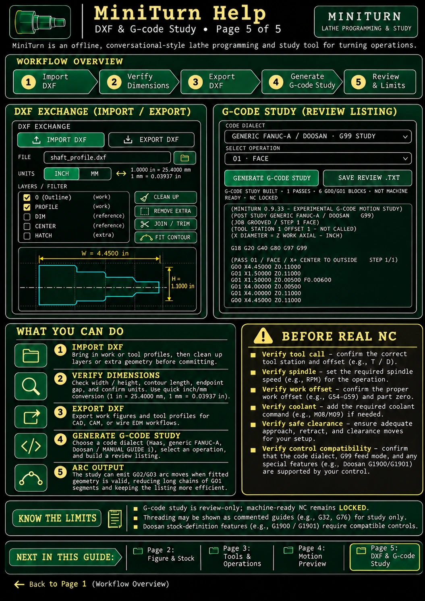

Pictorial user guide · 5 of 5
DXF & G-code Study
Import/export 2D geometry and review unqualified G-code output.

Key points
- Filter unwanted DXF layers and check dimensions before committing a contour.
- Review Haas, generic FANUC, and Doosan code study dialects.
- G02/G03 fitting is available in the current study build. Machine-ready NC remains locked.
Illustrated examples may show earlier G-code study versions. The current v0.9.36 build supports fitted G02/G03 review output. Do not run study listings on a CNC. Machine-ready NC output is locked; geometric previews and studies are not safety certification.